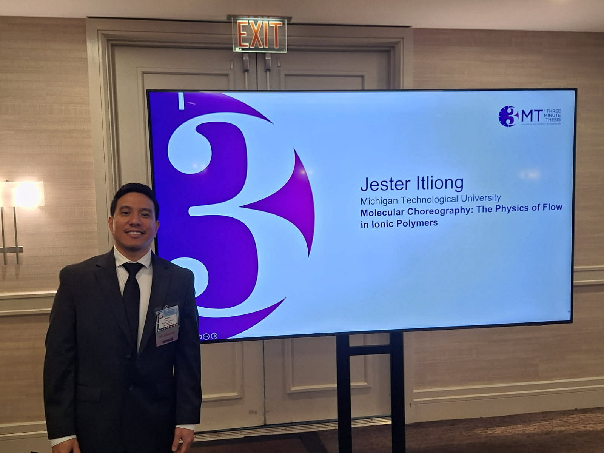
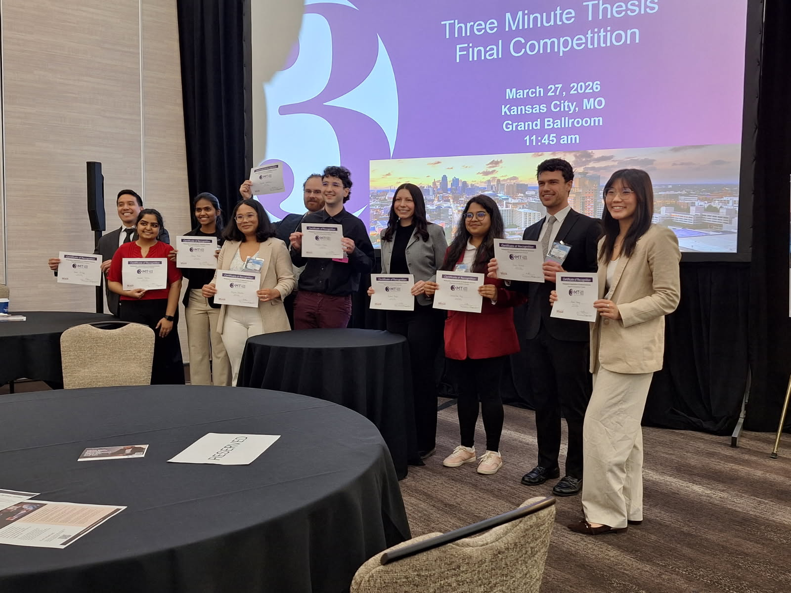

Award
Finalist at the Midwest Regional 3-Minute Thesis Competition


I represented Michigan Tech at the Midwestern Association of Graduate Schools (MAGS) Three Minute Thesis competition in Kansas City, Missouri, on March 27, 2026, and advanced to the final round as one of only 10 finalists selected from dozens of university champions across the Midwest.
My talk, "Molecular Choreography: The Physics of Flow in Ionic Polymers," distilled years of molecular dynamics simulations into three minutes and a single slide: how molecular properties such as size, charge, and polarity govern viscosity and ion transport in ionic liquids, the materials behind next-generation batteries and ion-conducting membranes. Earning Michigan Tech's sole representative spot followed my first-place win at the university's own 3MT competition.
Michigan Tech's Graduate School covered the story in this article.